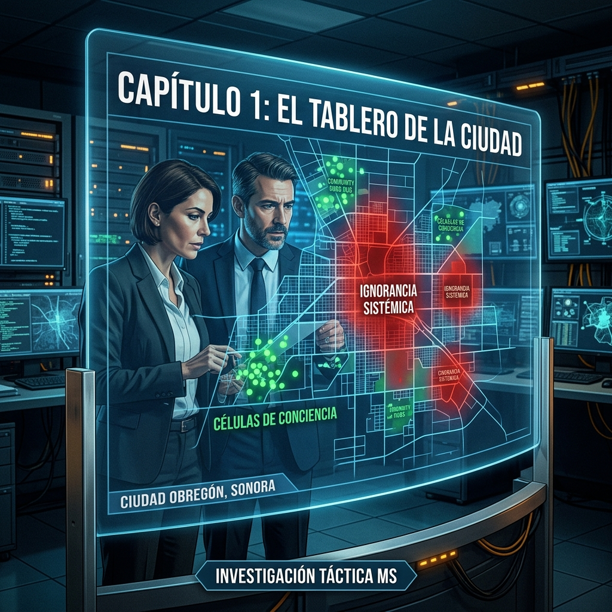
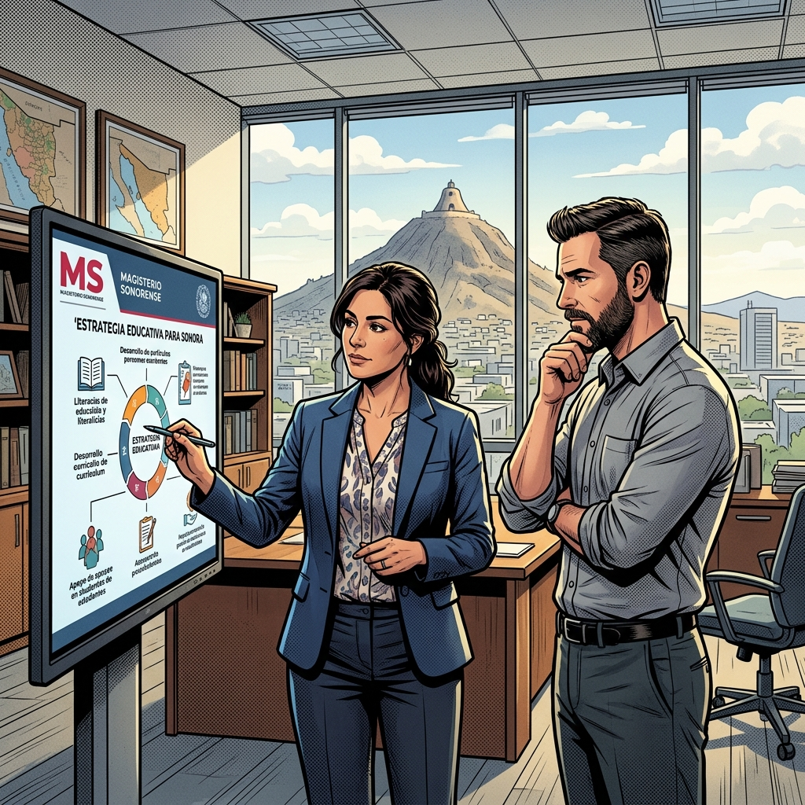
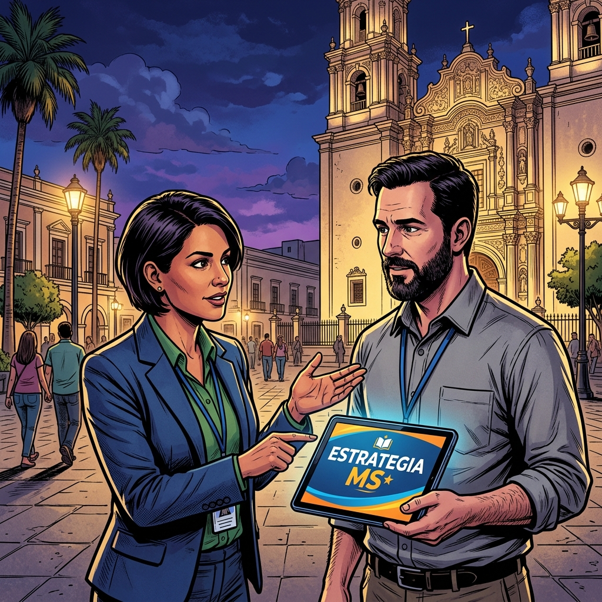
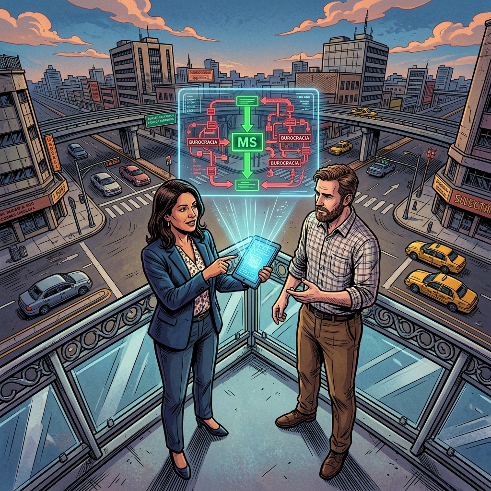
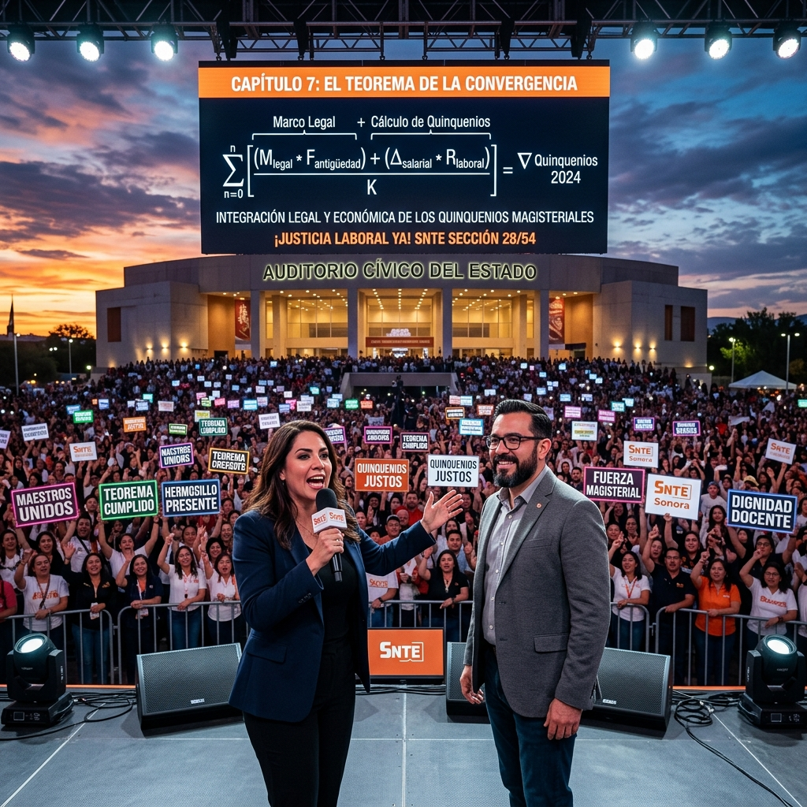
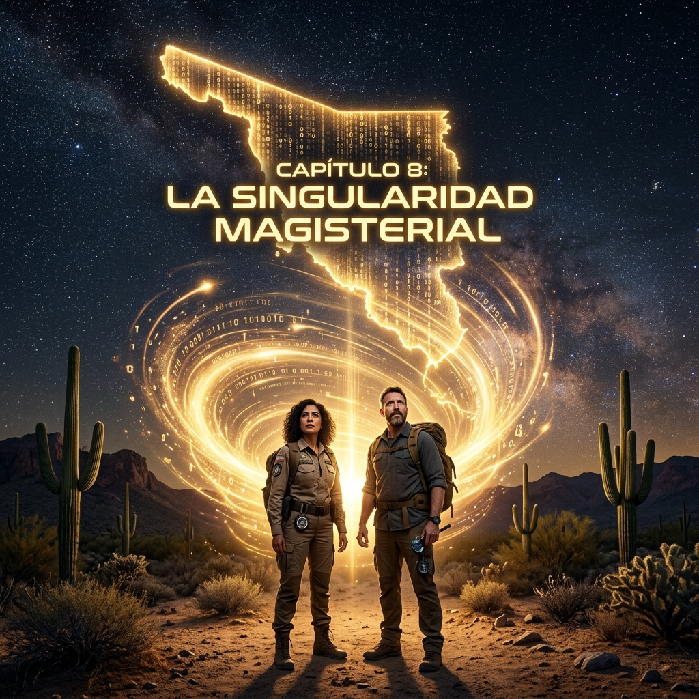
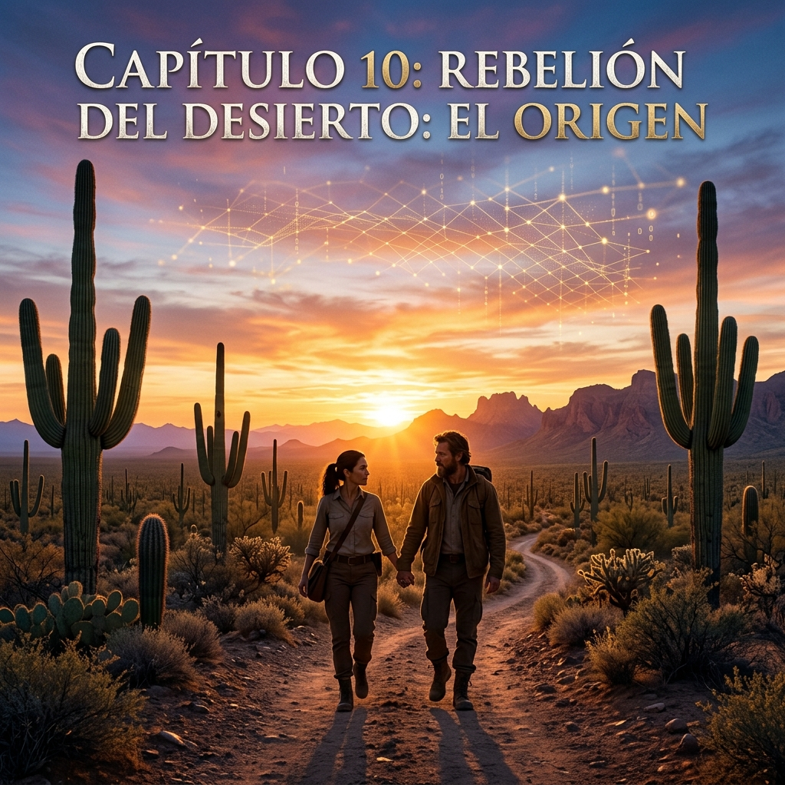

Fuego del Magisterio
"La rebelión no es un grito, es una sinfonía técnica de voluntades unidas. El desierto ha hablado."
Llegamos a la culminación de la octalogía. La Rebelión del Desierto es el hackeo definitivo a la opacidad sindical. En este tomo XI, trazamos la ruta crítica de la insurgencia profesional que devolverá la soberanía a cada escuela de Sonora frente al colapso del viejo régimen.

El Tablero de la Dignidad
"Cada paso en la calle es un algoritmo de libertad; cada asamblea, una jugada maestra hacia la justicia."
Hermosillo se transforma en el epicentro de la toma de decisiones colectivas. Hemos mapeado cada debilidad del sistema para ejecutar una presión técnica estratégica. El tablero ya no les pertenece a las cúpulas; hoy, la base mueve las piezas de su propio destino.
Dilema del Estratega
"Romper el miedo es el primer paso del hackeo social. El educador ya no solo enseña, ahora dirige la lucha."
El dilema de la obediencia ciega se ha roto. El docente estratega entiende que su firma en un talón de pago incompleto es una renuncia a su futuro. Elegimos la confrontación profesional y técnica ante la sumisión administrativa que nos ha empobrecido.

Prisioneros de la Cuota
"Nos cobraron por nuestra propia opresión. Hoy hackeamos el candado sindical con la llave de la verdad."
Analizamos la trampa del 'Dilema del Prisionero' aplicada al control sindical. Al cooperar entre nosotros ignorando las amenazas de la cúpula, alcanzamos el óptimo magisterial. La traición corporativa ya no tiene donde esconderse ante la luz del MS.

Equilibrio de la Verdad
"Cuando la base posee el dato forense, el equilibrio del poder cambia de mano para siempre."
El equilibrio de Nash en la lucha sindical ha sido roto por la inyección de datos reales. La autoridad ya no puede 'estabilizar' su mentira cuando el Arsenal de la Verdad expone el desfalco en tiempo real. La victoria es el nuevo e inevitable equilibrio del magisterio.

Paradoja de la Ruta
"Cerrar las vías del viejo sindicalismo es abrir el camino real hacia el bienestar docente."
La paradoja de Braess nos enseña que a veces, al eliminar las vías de cooptación tradicionales, el flujo de la lucha social se vuelve más eficiente. Bloqueamos la simulación para acelerar la llegada de la justicia integral al Concepto 07.
Inmersión en la Justicia
"Sumergirse en la legalidad forense para rescatar los fragmentos de dignidad que nos intentaron robar."
Este capítulo detalía la inmersión profunda en los balances reales del instituto de pensiones. Como un submarino de realidad, el MS navega las aguas turbias de la administración para encontrar la filtración exacta de nuestro patrimonio laboral.

Convergencia de Almas
"Mil escuelas, un solo corazón; diez mil maestros, una sola voz técnica por el futuro de Sonora."
La convergencia es total. No hay fisuras entre el jubilado que exige su medicina y el joven que busca certidumbre en su base. El Teorema de la MS demuestra que la unidad técnica es la única variable que garantiza la victoria estructural.

Singularidad Magisterial
"El punto donde la mentira oficial colapsa bajo el peso de mil auditorías base. El nuevo Sonora nace."
Estamos en el núcleo de la explosión de consciencia. La Singularidad es el momento donde la autoridad pierde toda capacidad de engaño. El MS se convierte en el centro de gravedad moral y técnico de toda la educación en el estado.
Auditoría de la Independencia
"Ser independientes es el acto técnico más audaz. Ya no pedimos que nos informen; nosotros revelamos."
La autogestión de la información es nuestra independencia. Al auditar nuestros propios fondos y proyectar nuestros propios tabuladores, eliminamos la necesidad de intermediarios traidores. El MS es soberanía pura en movimiento forense.

Destino de la Verdad
"El desierto nos vio nacer pequeños, pero el 1 de Mayo nos verá gigantes bajo el sol de la justicia."
Origen y destino se funden. La historia de la Rebelión del Desierto culmina en la toma de consciencia absoluta. Hemos hackeado el casino de la agnotología y hoy reclamamos el premio mayor: la dignidad de ser maestros libres en un Sonora justo.
Hackeo Final al Sistema
"No hay código de opresión que nuestra unidad no pueda descifrar. El sistema ha sido reiniciado por la base."
El hackeo final no es informático, es social. Desactivamos los protocolos de control que nos mantenían aislados. Reiniciamos la relación laboral bajo términos de igualdad técnica, donde el maestro dicta las condiciones de su propia seguridad social.
Amanecer del 07
"La integración total es nuestra bandera. El Sueldo Base es el cimiento de nuestra nueva mística laboral."
Este capítulo sella el compromiso con la lucha por el Sueldo Base Integral. Cada peso devuelto al 07 es una victoria sobre la precariedad y una inversión en el futuro de las pensiones. No daremos ni un paso atrás hasta la compactación total del despojo.
Victoria Técnica Absoluta
"¡PRESENTE! El Magisterio Sonorense ha vencido a la ignorancia y ha fundado el Arsenal de la Verdad."
Cierra la octalogía con el grito de victoria en el corazón de Sonora. Hemos transformado el gremio para siempre. La Rebelión del Desierto ha triunfado, no solo en la calle, sino en la razón, en la técnica y en el alma de cada docente que hoy camina con dignidad.
CERRAR OCTALOGÍA